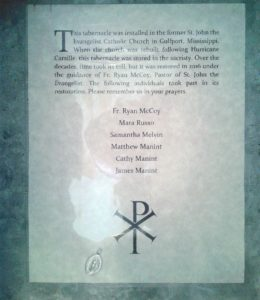

{kind=link}

My spiritual director, Fr. Ryan McCoy, is the pastor of St. John’s Parish in Gulfport, MS (https://stjohngulfport.org/). In the sacristy at St. John’s, tucked under the counter and unused for decades, sat the original tabernacle from the first parish church (dedicated in 1922). From what I could find out through online research, Hurricane Camille destroyed the original church in 1969, and the new church was dedicated in 1972. Fr. Ryan was eager to get the original tabernacle restored and back in use, but was concerned about the cost to do so. Manufactured sometime around 1920 out of solid brass, it was not only heavily tarnished and neglected, but weighed upwards of 250 pounds. In a fit of enthusiasm, and without any prior experience in these things, I said, “Well, I’d be glad to take a crack at it!” After wrangling it from my car into my house, I started to become concerned.
{kind=link}

The tabernacle was manufactured by Matre & Company of Chicago, and I could find very little information about this company online. In addition, nobody seems to have developed any kind of database that tracks the different types of tabernacles that have been manufactured over the centuries, nor any methods of working on them, so I was on my own. It’s my hope that some of my methods might help others who are working on similar projects.
The first step was to figure out the best way to remove the tarnish from the brass. Mere elbow grease and polish would take hundreds of hours, and the outer doors have various decorative elements (vines, grape clusters, etc.) that are mounted to them, making the nooks and crannies very difficult to access. The only way to remove them would be to unscrew two large bolts that hold the entire brass assembly within the black metal case, and then take it apart, gears and all. However, those two bolts are badly corroded and would not budge, so that was not an option. I was left having to work on everything in situ.


I determined to first get the outer frame restored, as it was composed of flat surfaces and, hence, easier to work on. After knocking the frame loose, I needed some help with removing decades of tarnish, so a few Internet searches provided some initial ideas. Spreading ketchup on the brass did not do much, yet a mixture of vinegar, flour, and salt proved very promising. I made a large batch of the paste (simply add vinegar to a 1:15 ratio of salt to flour until it’s thick), spread it on the frame, and waited an hour. After removing the paste and flushing the metal with baking soda and water to stop the acidic cleaning action, most of the tarnish was gone. I followed this up with some very light sanding, polished with Maas metal polish, and added a thin coat of Johnson’s floor wax as a protectant. It was a good start and I was feeling overconfident, but the same methods would not work for the rest of the project.


I flipped the tabernacle on its back, completed the paste treatment on the outer doors, and got to work. I ordered a rotary tool with a flexible shaft attachment, and multiple polishing bits. Hours later, I was at a standstill. The dirt and tarnish were deeply embedded in all of the tiny details and crevices, and I discovered an old layer of varnish coating the brass. Solvents and paint strippers got me nowhere, and I remember lying in bed that night, unable to sleep because I was at the point of admitting that the task was beyond my abilities.
{kind=link}
Suddenly, I thought of the can of Bar Keepers Friend, a metal cleanser, under my sink. Using a stiff nylon brush and a paste made with the cleanser, I scrubbed one of the clusters of grapes that had eluded every method I threw at it. Within minutes, the brass was gleaming. From this point, the project went very quickly. The interior doors were not able to be polished due to the almost sandpaper texture of the brass, so I painted them with copper enamel. For the rest of the brass, I followed this regimen:
- Scrub all of the old varnish and tarnish with Bar Keepers Friend
- Using the rotary tool and a cotton buffing wheel or black nylon brush, polish with polishing compound (rouge and white)
- Clean the brass with mineral spirits
- Polish the brass with Maas
- Clean again with mineral spirits
- Polish the brass with Brasso
- Apply a very thin layer of Johnson’s Paste Wax, let dry, then buff
{kind=link}
My little oratory was taken over
For two reasons, I decided not to try and cover everything with varnish. First, I didn’t have the equipment or skill to do so. Secondly, varnish always darkens and peels over the years, and I wouldn’t want someone to face the same challenge in 100 years that I had to go through. So, this tabernacle will most likely need to be repolished every 6 months. I sprayed the gears with white lithium grease, lubricated the lock, and it was finished.
Finally, a document was taped to the back wall of the tabernacle that listed all who worked on it, along with the Miraculous Medal that Fr. Ryan had put inside the tabernacle before it left the parish. The interior will be covered with a new lining, and a veil will be sewed and installed. 
{kind=link}
Ultimately, I probably spent around 60 hours working on the tabernacle, and it was truly a special project to be a part of. Just having it in my home was a blessing. The parish saved thousands of dollars, and I now have the skills to keep it maintained. I hope others will not only be inspired to restore their own parish’s tabernacle, but not to be afraid to undertake any project for the greater glory of God.
{kind=link}
What a wonderful thing to be a part of. You did a fantastic job and are a true blessing to your parish
What a wonderful thing to be a part of. You did a fantastic job and are a true blessing to your parish .
Aunt Ruth Ann
Beautiful work Matt, God bless you for your persistence . The final results had to make you proud.
Excellent job, Matthew. Just a thought, Brasso and a stiff bristle tooth brush might work on the stippled surface inside the doors. At any rate, your results were excellent. Very proud of you and your efforts.
Love You.
Uncle Jerry
Thank you all so much for your kind comments!
Believe it or not we are going to be starting the process to restore and identical tabernacle at St. Anthony’s church in St. Cloud, MN. I have a few (maybe more) questions about the process you used. Can you contact me at (redacted) or call me at (redacted). I am excited to hear from you.